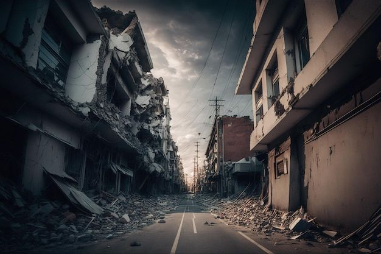

How to Survive an Earthquake
Earthquakes can strike suddenly, especially in quake-prone regions. Stay alert by monitoring seismic activity and knowing your local geography. Prepare a basic emergency kit with essentials like water and first aid. In the event of an earthquake warning, find a safe place, take cover, and prioritize your safety. Stay informed, stay ready!
Earthquake Preparedness
- ✔ Drop
- ✔ Cover
- ✔ Hold me
How to Prepare for an Earthquake
Consider these steps before, during, and after an Earthquake:
Before an Earthquake
- Investigate the availability of earthquake early-warning systems in your area, recognizing their potential as a precautionary measure.
- Evaluate your surroundings by identifying objects that could fall and cause harm during shaking. Imagine your space being shaken in various directions and take precautions with items such as televisions, shelves, mirrors, pictures, water heaters, refrigerators, and bookcases.
- If you reside in an earthquake-prone region, consider having your building assessed and explore structural improvements to enhance overall safety.
- Ensure you have essential emergency provisions readily available, including food, medication, flashlights, whistle, radios, water, and first aid kits.
During an Earthquake
- Safeguard yourself by shielding your head and neck your hands or with a pillow during the earthquake.
- If you find yourself outdoors, drop to the ground, then crawl to open space if possible. Steer clear of buildings, power lines, and trees for safety.
- If driving, halt and remain inside your vehicle. Avoid stopping near buildings, trees, overpasses, and utility wires. Exercise caution when resuming travel once the earthquake subsides, steering clear of bridges or ramps.
After an Earthquake
- Take a moment before standing up after the earthquake. Assess your surroundings for immediate dangers and ensure your protection.
- Be cautious of broken glass and debris on the ground, so promptly wear sturdy shoes.
- For those near the coast, be aware of the potential for a tsunami following the earthquake. When the shaking subsides, move swiftly to safety by climbing to higher ground or inland away from the coast. Don't wait for official warnings.
- If trapped, shield your mouth, nose, and eyes from airborne debris. Use a cloth, clothing, or a dust mask to cover your mouth and nose.